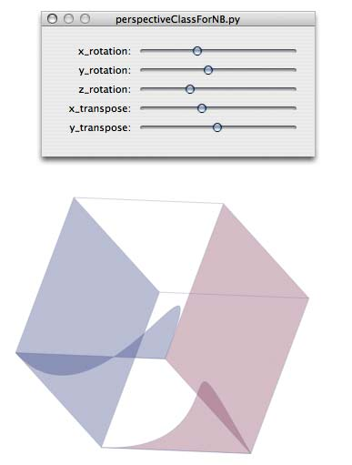

Somebody asked a while back about including z coordinates for 3D work in nodebox. It doesn't look like this is in the works, but since you have the full power of python, it's not too hard to implement your own solution. There are a lot of python packages that can help you out for 3d work that could be used with nodebox to do some of the work, but since nodebox comes with the Numeric package which does matrix math quickly, I thought I'd post an example of using it to make a simple proof of concept. This simply subclasses nodebox's Point class, adds a z coordinate, and some math to rotate the points around the axes and render them back to the 2D screen. An interesting thing I noticed while doing this is that you can manipulate the control points of Bezier curves in 3D space they seem to work. To keep things simple I haven't included perspective or point-of-view manipulations but they aren't any more difficult. Hidden surface removal might be tricky, though--the example avoids this by using transparent surfaces.
### A simple 3d example for NodeBox by Mark Meyer### http://www.photo-mark.comsize(600,900)nofill()stroke(.5, .5, .7)strokewidth(.25)from Numeric import *
translate(300, 400)
blue = color(.2, .2, .5, .3)
red = color(.5, .2, .3, .3)class point3D(Point):
'''subclass for 3d points'''def__init__(self, *args):
iflen(args) == 3:
self.x, self.y, self.z = args
eliflen(args) == 1:
self.x, self.y, self.z = args[0]eliflen(args) == 0:
self.x = self.y =self.z = 0.0else:
raise NodeBoxError, "Wrong initializer for Point3D object"self.matrix = array(([self.x,], [self.y,], [self.z,], [1,]), Float)def__repr__(self):
return"Point(x=%.3f, y=%.3f, z=%.3f)" % (self.x, self.y, self.z)def__eq__(self, other):
if other isNone: returnFalsereturnself.x == other.xandself.y == other.yandself.z == other.zdef__ne__(self, other):
returnnotself.__eq__(other)defproj_2DTrans(self):
'''easy orthographic 2d projection--just take the x and y
assumes viewer is infinite distance all z lines are parallel. i.e. no perspective'''returnself.x, self.ydefrotate(self, x, y, z):
# rotation matrices ## this is where numeric comes in handy
rotY = array(([cos(y), 0, sin(y), 0],
[0, 1, 0, 0],
[-sin(y), 0, cos(y), 0],
[0, 0, 0, 1]), Float)
rotX = array(([1, 0, 0, 0],
[0, cos(x), -sin(x), 0],
[0, sin(x), cos(x), 0],
[0, 0, 0, 1]), Float)
rotZ = array(([cos(z), -sin(z), 0, 0],
[sin(z), cos(z), 0, 0],
[0, 0, 1, 0],
[0, 0, 0, 1]), Float)self.matrix = matrixmultiply(rotX, self.matrix)self.matrix = matrixmultiply(rotY, self.matrix)self.matrix = matrixmultiply(rotZ, self.matrix)self.x = self.matrix[0]self.y = self.matrix[1]self.z = self.matrix[2]deftranspose(self, x, y, z):
trans = array(([1, 0, 0, x],
[0, 1, 0, y],
[0, 0, 1, z],
[0, 0, 0, 1]), Float)self.matrix = matrixmultiply(trans, self.matrix)self.x = self.matrix[0] / self.matrix[3]self.y = self.matrix[1] / self.matrix[3]self.z = self.matrix[2] / self.matrix[3]# create 3D Vertices on cube
vertices = [
point3D(-100, -100, -100),
point3D(100, -100, -100),
point3D(100, 100, -100),
point3D(-100, 100, -100),
point3D(-100, -100, 100),
point3D(100, -100, 100),
point3D(100, 100, 100),
point3D(-100, 100, 100)]# rotate & transpose all the points# order is important rotate first then transpose# otherwise you get global rotation not local rotationvar('x_rotation', NUMBER, 1.0, 0, 6.3)var('y_rotation', NUMBER, 1.0, 0, 6.3)var('z_rotation', NUMBER, 1.0, 0, 6.3)var('x_transpose', NUMBER, 0.0, -100, 100)var('y_transpose', NUMBER, 0.0, -100, 100)## z transpose doesn't really do anything with orthographic projectionmap(lambda p: p.rotate(x_rotation, y_rotation, z_rotation), vertices)map(lambda p: p.transpose(x_transpose, y_transpose, 0), vertices)#draw paths with newly-converted pointsfill(blue)beginpath(*vertices[0].proj_2DTrans())for point in vertices[1:4]:
lineto(*point.proj_2DTrans())endpath()fill(red)beginpath(*vertices[4].proj_2DTrans())for point in vertices[5:8]:
lineto(*point.proj_2DTrans())endpath()for(point1, point2)inzip(vertices[0:4], vertices[4:8]):
beginpath(*point1.proj_2DTrans())lineto(*point2.proj_2DTrans())endpath()#add bezier curve to one facebeginpath(*vertices[7].proj_2DTrans())curveto(*(vertices[2].proj_2DTrans() + vertices[7].proj_2DTrans() + vertices[3].proj_2DTrans()))endpath()fill(blue)#use control point in 3d to pull curve into cubebeginpath(*vertices[0].proj_2DTrans())curveto(*(vertices[3].proj_2DTrans() + vertices[5].proj_2DTrans() + vertices[4].proj_2DTrans()))endpath()


Nodebox for 3D points
Posted by Mark M on Apr 20, 2007
Somebody asked a while back about including z coordinates for 3D work in nodebox. It doesn't look like this is in the works, but since you have the full power of python, it's not too hard to implement your own solution. There are a lot of python packages that can help you out for 3d work that could be used with nodebox to do some of the work, but since nodebox comes with the Numeric package which does matrix math quickly, I thought I'd post an example of using it to make a simple proof of concept. This simply subclasses nodebox's Point class, adds a z coordinate, and some math to rotate the points around the axes and render them back to the 2D screen. An interesting thing I noticed while doing this is that you can manipulate the control points of Bezier curves in 3D space they seem to work. To keep things simple I haven't included perspective or point-of-view manipulations but they aren't any more difficult. Hidden surface removal might be tricky, though--the example avoids this by using transparent surfaces.